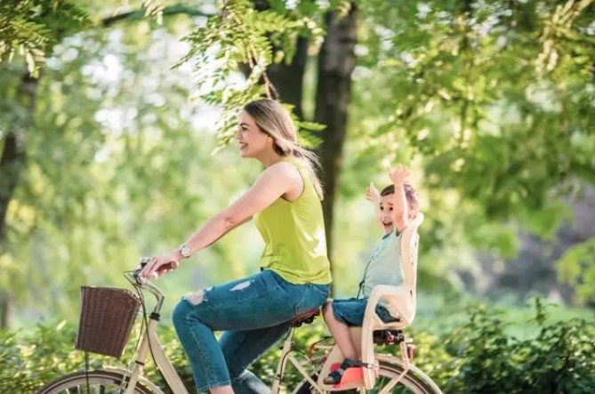

DATOS PERSONALES
- Nombre: Karen Rivadero
- Edad: 27 años
- Ciudad: Córdoba
- País: Argentina
PASATIEMPOS E INTERESES
- Programación Front - End
- Senderismo/Trekking
- Ciclismo en familia

EXPERIENCIAS
- Actualmente cursando Programación Front-End a través del programa "YoProgramo" en FAMAF,
- 2020- actualidad:encargada general en un local gastronómico,
- 2019-2020:secretaria en consultorio de Kinesiología y Fisioterapia,
- 2019:realicé un curso de secretariado y facturación médica.